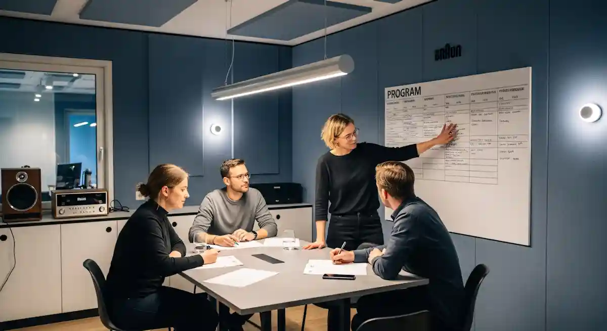

React Hooks have revolutionized the way we write functional components in React. Introduced in React 16.8, Hooks allow developers to manage state and side effects without relying on class components. In this post, we'll explore the core Hooks, their use cases, and best practices.
Why Use Hooks?
Hooks simplify component logic by allowing you to reuse stateful behavior across components. They eliminate the complexity of class-based components and make code more readable and maintainable.
- Reusable logic with custom Hooks
-
Easier state management with
useState -
Side effect handling with
useEffect -
Improved performance with
useMemoanduseCallback
Getting Started with useState
The
useState
Hook is the foundation of state management in functional
components. Here's how to use it:
-
Import
useStatefrom React. - Declare a state variable and its setter function.
- Update the state using the setter function.
"Hooks allow you to write cleaner, more modular code without sacrificing functionality." — Dan Abramov
Understanding useEffect
The
useEffect
Hook lets you perform side effects in functional components. It
serves the same purpose as
componentDidMount,
componentDidUpdate, and
componentWillUnmount
combined in class components.
Runs After Render
By default, effects run after every completed render.
Dependency Array
Control when effects run using the dependency array.
Cleanup Function
Return a function from useEffect to clean up subscriptions.
Best Practices
To make the most of Hooks, follow these guidelines:
- Only call Hooks at the top level of your component.
- Don't call Hooks inside loops, conditions, or nested functions.
- Use custom Hooks to share logic between components.
-
Always specify the correct dependencies in the
useEffectdependency array.
By mastering Hooks, you can build more efficient and maintainable React applications. Stay tuned for more advanced Hook patterns in my next post!

Related Articles
Scaling Node.js Apps with Docker
Learn how to containerize Node.js applications for seamless deployment and scalable architecture in production.
Read MoreWhy TailwindCSS Changed My Workflow
Discover how TailwindCSS boosts productivity with utility-first styling and robust design system constraints.
Read More
Advanced GraphQL API Design
Master scalable GraphQL APIs: schema design, caching strategies, and robust error handling in production.
Read More